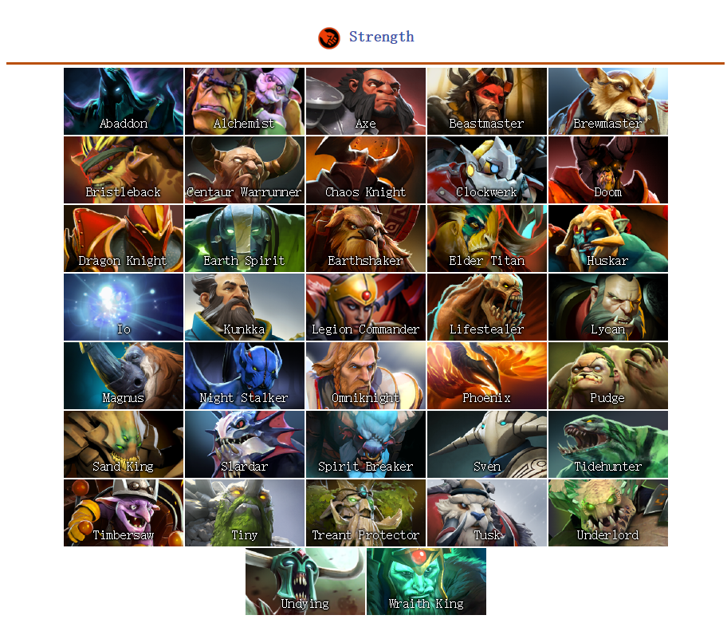

Heroes are the essential element of Dota 2, as the course of the match is dependent on their intervention. During a match, two opposing teams select five out of 116 heroes that accumulate experience and gold to grow stronger and gain new abilities in order to destroy the opponent's Ancient. Most heroes have a distinct role that defines how they affect the battlefield, though many heroes can perform multiple roles. A hero's appearance can be modified with equipment.
